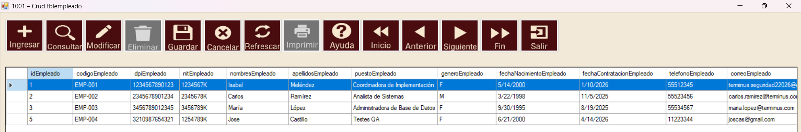

Acciones
| Botón | Función | Observación |
|---|---|---|
| Ingresar | Abre un registro nuevo. | Requiere permiso Insertar. |
| Consultar | Carga datos y abre Consultas. | Necesita llave primaria. |
| Modificar | Abre la fila seleccionada. | Requiere permiso Editar. |
| Eliminar | Elimina la fila tras confirmar. | Requiere permiso Eliminar. |
| Refrescar | Vuelve a leer la tabla. | Quita filtros. |
| Guardar | Confirma ingreso o modificación. | Necesita un panel abierto. |
| Cancelar | Cierra la edición sin guardar. | No elimina registros. |
| Inicio / Anterior / Siguiente / Fin | Mueve la selección. | Requiere filas visibles. |
| Imprimir | Reservado para reportes. | Integración pendiente. |
| Ayuda | Abre esta guía. | Incluida en la DLL. |
| Salir | Oculta campos y cuadrícula. | No cierra el formulario. |
Dónde se conectan los botones
Eventos Clickcodigo\componentes\navegador\Navegador\CapaVista_Navegador\Navegador.cs - Método: NavegadorMetCablearBotones()Despacho de accionescodigo\componentes\navegador\Navegador\CapaVista_Navegador\Formularios\ClsNavegadorAcciones.cs - Método: NavegadorMetEjecutar(string Accion)Ayudacodigo\componentes\navegador\Navegador\CapaVista_Navegador\Ayudas\ClsNavegadorAyuda.cs - Método: NavegadorMetMostrar(Control Padre)


Cómo se aplican los permisos
Mapa de permisoscodigo\componentes\navegador\Navegador\CapaVista_Navegador\Navegador.cs - Método: NavegadorFuncMapaPermisos()Consulta y aplicacióncodigo\componentes\navegador\Navegador\CapaVista_Navegador\Seguridad\ClsCrudSeguridad.cs y ClsNavegadorPermisos.cs
Seguridad consulta la sesión usando los IDs de módulo y aplicación. Solo Ingresar, Modificar, Eliminar e Imprimir se controlan con los permisos Insertar, Editar, Eliminar e Imprimir.
Guardar no tiene permiso separado: completa una acción ya autorizada al abrir Ingresar o Modificar.
Sin sesión o sin conexión con Seguridad, los botones protegidos quedan deshabilitados. No los habilite manualmente; corrija sesión, asignación o conexión.